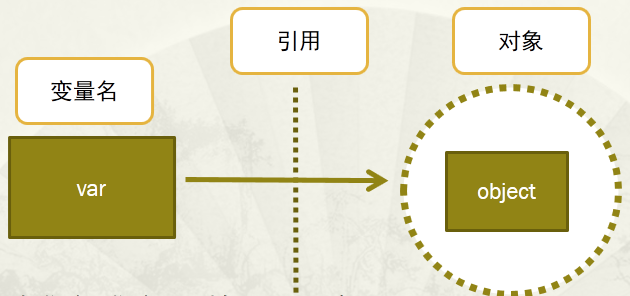

15. 内存管理
15.1. 变量与对象
{kind=link}
（图片来源：https://www.cnblogs.com/geaozhang/p/7111961.html）
- 变量
通过变量指针引用对象，变量指针指向具体对象的内存空间，取对象的值。
- 对象
类型已知，每个对象都包含一个头部信息（类型标识符和引用计数器）
变量名没有类型，类型属于对象。
1>>> a = "hello"
2>>> b = "hello"
3>>> a==b
4True
5>>> a is b
6True
7>>> id(a)
8140568052594368
9>>> id(a)
10140568052594368
11
12>>> a = "hello world"
13>>> b = "hello world"
14>>> a==b
15True
16>>> a is b
17False
18>>> id(a)
19140568052594752
20>>> id(a)
21140568052594320
22
23>>> a = [1,2,3]
24>>> b = a
25>>> a==b
26True
27>>> a is b
28True
Note
Python缓存了整数和短字符串，因此每个对象在内存中只存有一份，赋值语句只是创造新的引用，而不是对象。
Python没有缓存长字符串、列表及其他对象，可以有多个相同的对象，赋值语句创建出新的对象。
15.1.1. 变量的改变
- 不可变对象
赋值、加减乘除这些操作实际上导致变量指向的对象发生了改变（已经不是指向原来的那个对象了），并不是通过这个变量来改变它指向的对象的值。
1>>> a = 10
2>>> id(a)
321856416
4>>> a = a - 1
5>>> id(a)
621856440
7>>> a *= 2
8>>> id(a)
921856224
- 可变对象
对于list、dict对象，此时变量的指向没有改变。
1>>> a = []
2>>> id(a)
3140568052448936
4>>> a.append(1)
5>>> id(a)
6140568052448936
15.2. 引用计数
from sys import getrefcount
使用 sys 包中的 getrefcount() ，来查看某个对象的引用计数。
需要注意的是，当使用某个引用作为参数，传递给 getrefcount() 时，参数实际上创建了一个临时的引用。
因此， getrefcount() 所得到的结果，会比期望的多 1。
15.2.1. 普通引用
1>>> a = [1,2,3]
2>>> getrefcount(a)
32
4>>> b = a
5>>> getrefcount(a)
63
7>>> getrefcount(b)
83
9>>> del b
10>>> getrefcount(a)
112
12
13
14>>> getrefcount(1)
152418
16>>> n = 1
17>>> getrefcount(1)
182419
19>>> m = n
20>>> getrefcount(1)
212420
22>>> del n
23>>> getrefcount(1)
242419
25>>> n = [1,2,3]
26>>> getrefcount(1)
272420
28>>> m = 2
29>>> getrefcount(1)
302419
15.2.2. 容器对象
Python的容器对象(container)，比如列表、元组、字典等，可以包含多个对象。容器对象中包含的并不是元素对象本身，是指向各个元素对象的引用。
1>>> a = [1,2,3]
2>>> getrefcount(a)
32
4>>> b = [a, a]
5>>> getrefcount(a)
64
15.2.3. 循环引用
只有容器对象才会产生循环引用的情况，比如列表、字典、用户自定义类的对象、元组等。而像数字、字符串这类简单类型不会出现循环引用。
1>>> a = []
2>>> t = [a]
3>>> getrefcount(a)
43
5>>> a.append(t)
6>>> getrefcount(a)
79
15.3. 垃圾回收
>>> import gc
>>> print gc.get_threshold()
(700, 10, 10)
## 700 是垃圾回收启动的阈值，10 是与分代回收相关的阈值
当Python的某个对象的引用计数降为 0 时，说明没有任何引用指向该对象，该对象就成为要被回收的垃圾了。 频繁的垃圾回收（garbage collection），将大大降低Python的工作效率。 如果内存中的对象不多，就没有必要总启动垃圾回收。所以，Python只会在特定条件下，自动启动垃圾回收。
当Python运行时，会记录其中分配对象（object allocation）和取消分配对象（object deallocation）的次数。 当两者的差值高于某个阈值时，垃圾回收才会启动，清除那些引用计数为0的对象。
15.3.1. 垃圾检查
gc.get_count() 获取一个三元组，如 (488, 3, 0) 。
488是指距离上一次0代垃圾检查，Python分配内存的数目减去释放内存的数目。
3是指距离上一次1代垃圾检查，0代垃圾检查的次数。
0是指距离上一次2代垃圾检查，1代垃圾检查的次数。
15.3.2. 分代回收
Python将所有的对象分为0，1，2三代。所有的新建对象都是0代对象。当某一代对象经历过垃圾回收，依然存活，那么它就被归入下一代对象。 垃圾回收启动时，一定会扫描所有的0代对象。如果0代经过一定次数垃圾回收，那么就启动对0代和1代的扫描清理。 当1代也经历了一定次数的垃圾回收后，那么会启动对0，1，2，即对所有对象进行扫描。
(700, 10, 10) 表明：每10次0代垃圾回收，会配合1次1代的垃圾回收；每10次1代的垃圾回收，才会有1次的2代垃圾回收。
15.3.3. 标记-清除
Python采用了“标记-清除”(Mark and Sweep)算法，解决容器对象可能产生的循环引用问题。
标记阶段：遍历所有的对象，如果是可达的（reachable），也就是还有对象引用它，那么就标记该对象为可达；
清除阶段：再次遍历对象，如果发现某个对象没有标记为可达，则就将其回收。
15.4. 参考资料
Python内存管理机制
Python的内存管理
Python垃圾回收机制详解
聊聊Python内存管理
[Python]内存管理